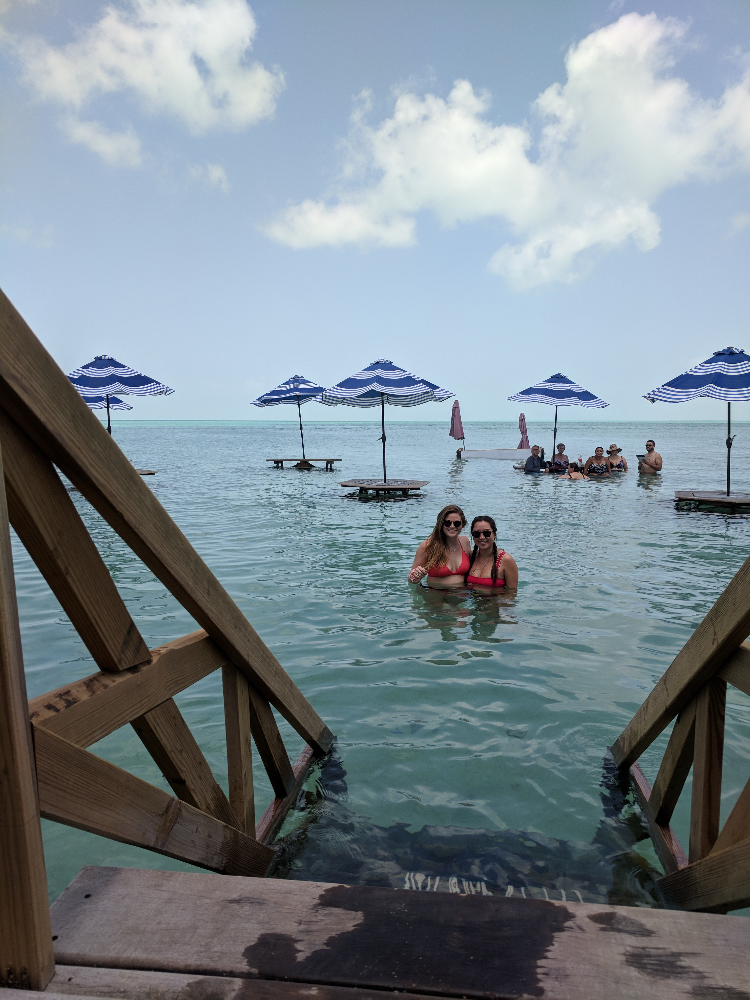
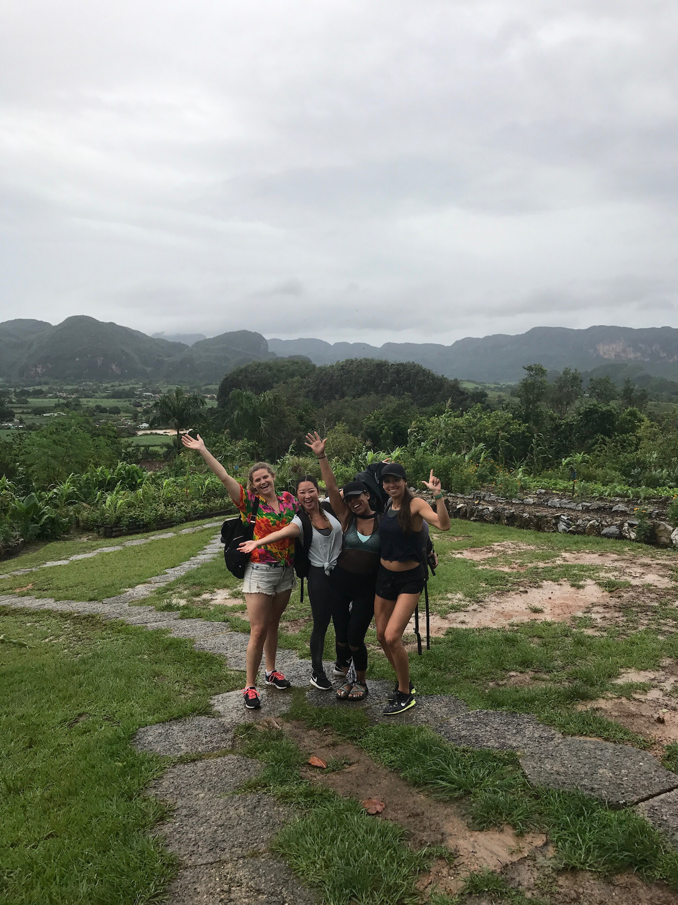

My Story
Hello! My name is Isabel and I am currently a student at Coding Temple. I reside in Dallas, TX but I grew up in
Louisiana. When I am not coding, I love to spend some time in my kitchen and cook exciting dishes. I also enjoy
traveling to new places around the world. Here are a few pictures of my
travels:


Why Web Development?
I've always been interested in technology but never thought I was smart enough to pursue a career in tech. In
college, I went on the path of psychology and eventually received my Master's in Industrial /
Organizational Psychology. After graduation, I worked in the recruitment industry and for the past 5 years I
have worked as a research associate. I felt secure at my job but I was never challenged. Over 3 years ago, I
looked into coding and knew the possibilities were limitless. At first I started with online learning and then
luckily found some people to pair-program with. I learned a great amount from those individuals and gained a lot
of confidence after 2 years. I soon realized that I had waited long enough to make a change and I decided to
enroll in Coding Temple to begin my new career path.